局（如在五番棋中，
局（如在五番棋中，1.6 期望与方差
在概率论的萌芽时期，有一个问题曾对其发展起了一定的作用，即所谓分赌本问题。问题是下面这样的。甲、乙二人各出同等数目的赌注，比方说 1 元，然后进行博弈。每一局甲胜和乙胜都有同等概率，即 0.5。二人约定，谁先胜满 局（如在五番棋中，
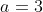
），谁就取走全部赌注 2 元。到某时为止，甲已经胜了 局而乙已胜了
局而乙已胜了  局，、 都比 小，而二人因故要中止博弈，问这 2 元赌注该如何分才算公平。
局，、 都比 小，而二人因故要中止博弈，问这 2 元赌注该如何分才算公平。如果  ，则二人态势一样，平分赌注不会有异议。若 、不等，例如
，则二人态势一样，平分赌注不会有异议。若 、不等，例如
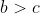
，则甲理应多分一些才公平。但具体的比例该如何才算公平，回答就不明显，因而一些学者曾提出过若干不同的解法。例如，帕西奥利提出按 的比例分配（是他在 1494 年的一部著作中提出了分赌本问题）。塔泰格利亚在 1556 年提出按
的比例分配（是他在 1494 年的一部著作中提出了分赌本问题）。塔泰格利亚在 1556 年提出按 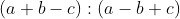
的比例分配。他对这一解法并无充分的自信，因此又指出，此问题最好交由法官判决。法雷斯泰尼在 1603 年提出按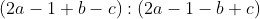
的比例分配。在上节中提到过的卡尔达诺，也在 1539 年提出过一个解法。记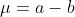
，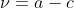
， 、
、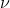
是甲、乙最终取胜尚需的胜局数，若 则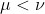
。他提出按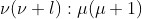
的比例分配赌注。这些学者的解法，由于其立论的依据都没有抓到要害之所在，所以都不正确。正确的解法最先是 17 世纪的大学者帕斯卡找到的，时间是 1654 年。他的想法是这样的，假想这两个人继续赌下去，则至多不超过
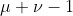
（、 意义见上）局，就会最后见分晓。在这期间，甲、乙最后获胜都有一定的概率，分别记为  和
和 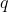
（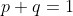
）。当 时必然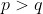
。算出 和 ，帕斯卡主张赌注应按 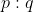
的比例去分配。举一个简单的情况来算一下。设
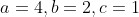
，则至多再赌 4 局即可分出最后胜负。这 4 局的结果有以下 16 种可能。甲甲甲甲 甲甲甲乙 甲甲乙甲 甲乙甲甲
乙甲甲甲 甲甲乙乙 甲乙甲乙 甲乙乙甲
乙甲甲乙 乙甲乙甲 乙乙甲甲 甲乙乙乙
乙甲乙乙 乙乙甲乙 乙乙乙甲 乙乙乙乙
例如，“甲乙乙甲”一项，表示 4 局中，甲胜了第 1、4 局而乙胜了第 2、3 局。逐一检视以上 16 个结果，我们容易发现，前 11 个结果甲最终获胜，而后 5 个结果是乙最终获胜。因为二人赌技水平相同，16 个结果是有等可能性，故甲、乙最终获胜的概率分别为 11/16 和 5/16。赌本应按 11∶5 的比例分给甲和乙。
想得更深一层的读者可能会问：“为什么按最终获胜的概率之比去分配是公平的？”其解释在于各人的“期望所得”。在最后 4 局未赌之前，甲有可能获得 2 元，但机会只有 11/16，因而他的“期望所得”只有 2·(11/16) 元 = 11/8 元。同样，乙的“期望所得”为 2·(5/16) 元 = 5/8 元。二人按各自的期望所得去分配应是合理的，而在此处，期望所得之比，与获胜概率之比是一回事，这样就解释了帕斯卡解法的合理性。
这个考虑引出了随机变量的“数学期望值”（常简称为期望）的概念。一般，如果一个随机变量  能够取的值是
能够取的值是
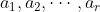
，取这些值的概率为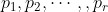
，则把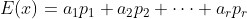
（3）称为 的期望。其道理与上面讲的一样， 可能取值  ，但它真取此值的概率只有
，但它真取此值的概率只有  ，故从这一部分它只能期望得到
，故从这一部分它只能期望得到
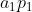
。对其他各值也类似分析，把各部分的期望都加起来，得到总的期望值，如公式（3）所示。记号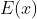
中的 是英文 Expectation（期望）的首字母。
是英文 Expectation（期望）的首字母。从公式（3）看出，期望事实上是一种加权平均值。 能取 等值，我们能“期望”它取值多少呢？我们不能期望 一定能取其中的最大值、最小值，或其中某一特定的值，而只能是一种平均性质的数值，但不是普通的算术平均而是加权平均，每个值的权重等于其概率。这不难理解，某个值的概率愈大，它出现的机会就愈大，因此应占到较大的比重。
拿前面讨论过的奖券的例子说，奖金数 的概率分布为表 1.1，按公式（3）， 的期望是
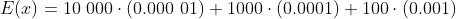
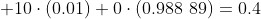
（元）。在一次实现（观察）中，期望值的意义不能充分体现出来。拿上例来说，你最终能得的金额，总是 10 000、1000、100、10 和 0这 5 种情况之一，不会是 0.4。期望的意义要在大量重复观察的情况下才能体现出来。设随机变量可能取的值为 ，相应的概率为  。现在对 重复观察了
。现在对 重复观察了  次（例如，同一奖券，每星期卖一次，你在 个星期内每次买一张），假定在这 次观察中， 的取值情况如表 1.3 所示。
次（例如，同一奖券，每星期卖一次，你在 个星期内每次买一张），假定在这 次观察中， 的取值情况如表 1.3 所示。
表 1.3
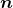
次观察对应的 的取值
的取值
| 次数 |  | 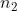 | … | 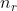 |
 的取值 的取值 |  |  | … | 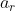 |
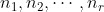
的和为。这样，在这 次观察中， 取值的总和为 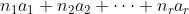
（相当于你从所买的 张奖券中，所得的奖金总数），而每次的平均取值为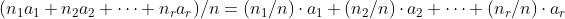
但
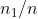
是在 次观察中， 这个值出现的频率。按伯努利大数定律，当 增大时，频率 愈来愈接近于 取 的概率 ，即
这个值出现的频率。按伯努利大数定律，当 增大时，频率 愈来愈接近于 取 的概率 ，即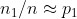
，记号≈表示近似相等而非严格相等。同样的道理，有
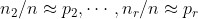
。因此，当观察次数 愈来愈大时，有 的 次取值的平均≈
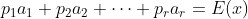
（4）这样，我们得到 的期望值的一个清楚的解释：如果对 做大量次数的观察，则由于偶然性的影响， 的各次取值将呈现出一种很纷乱的状态，但其中有规律性在，即随着观察次数的增加，其平均取值的波动愈来愈小，最后稳定到一个值上面，此值即 的期望。从这个解释可以看出，期望的意义要在大量重复观察中才能体现出来，对次数较少的观察，期望值的意义不大。
拿买奖券的例子说，如果奖券售价 1 元，而得奖期望值为 0.4 元，这表示你每买 1 张奖券，期望损失 0.6 元，这只有在你以极大量的次数去购买时才能体现出来。如果你只是偶一为之，则也可能碰上好运气而获大奖。在这种场合下，期望值无助于估量你可能的损失，但它作为一个奖金额的综合指标，仍有其参考意义。
笔者曾去参观美国的著名赌城拉斯维加斯。该城遍布大小赌场，里面有形形色色的赌具，在有的赌法的规则中，可明显看出（或稍加计算可以看出）这样一个共同的特点，即在每局中庄家（赌场主）所得的期望值略大于 0。例如，有一处赌场明确标示出，你在该赌场的“吃角子机”（又称“老虎机”）中投入一个角子（25 美分的硬币），期望所得为 0.98 个角子（多数赌场的实际情况恐远低于此数）。
由于赌客众多，上述平均值的规律对赌场主来说是起作用的。就是说，赌客每玩 1 次，赌场平均来说就有 0.02 个角子的收益。如果你只玩少数几次，多半是投进去一无所获，但偶尔也有碰运气拉出几百个的，这时平均的考虑不起作用。
对一个随机变量进行多次观察，其各次取值的平均愈来愈接近它的期望值，这样一个规律称为“关于期望值的大数定律”。如前面所指出的简单情况，这大数定律是由伯努利大数定律所推出的，但其意义比伯努利大数定律更广。这个定律最初是由俄国数学家切比雪夫在 19 世纪中叶首先提出，故常称为切比雪夫大数定律。到 20 世纪 30 年代，苏联数学家柯尔莫哥洛夫给了这个定律以一个更完备的形式，称为柯尔莫哥洛夫大数定律。
期望值及其大数定律的重大意义，根源于“平均”这个概念在应用上的普遍性。群体中各个体的表现是纷乱无章的。个别值在统计上意义不大，而平均值则有代表性，故我们谈到平均工资、平均住房面积、人口的平均寿命、某类人（如高级研究人员）的平均年龄、每亩地的平均产量等，都是期望这个概念在具体场合下的体现，而期望值大数定律则提供了一个在统计上估计这种平均值的方法。因为，按这个定律，如果我们观察了群体中足够多的个体，则这些个体数值的平均会很接近整个群体的平均值。
总之，期望，或平均值，对于描述一个群体，是应用最广的代表性数值。基于这一点，19 世纪比利时统计学家凯特勒（1796— 1874）在 1835 年引入了所谓“平均人”（average man，也有译为“普通人”的）。所谓某群体的平均人，是一个虚拟的人，他在一切所关心的指标上，包括身体、经济、文化乃至心理、道德等各方面，都具有该群体的平均值。例如，某城市在校男大学生群体的“平均人”可能是：身高 1.72 米，体重 64 千克，每月生活费 450 元，每天看电视 1 小时，等等。它可以当作文学艺术中的“典型”看待——但典型有时是指该群体中具有某种特性的人，不一定是平均。“平均人”是一个社会学概念，它给予群体一个形象的表达。如果我们要比较两个不同城市的男大学生群体，选择少数代表不一定能给出准确的印象，而通过其“平均人”的比较可以做到这一点。
平均值虽是刻画一个群体的重要指标，但不是完整的刻画。另一个重要指标是，群体中各个体的值在其平均值周围散布的程度如何。设一个学校某年级有两个班，各有学生 20 人，其某门课程考试的成绩如表 1.4 所示。
表 1.4 甲、乙两个班各 20 名学生的考试成绩表
| 甲班 | 分数 | 68 | 72 | 73 | 75 |
| 人数 | 2 | 6 | 4 | 8 |
| 乙班 | 分数 | 10 | 65 | 73 | 90 | 100 |
| 人数 | 2 | 2 | 10 | 2 | 4 |
化成百分率，甲班分数 和乙班分数  的概率分布如表 1.5 所示。
的概率分布如表 1.5 所示。
表 1.5 甲、乙两个班各分数的概率分布表
| | 取值 | 68 | 72 | 73 | 75 |
| 概率 | 0.1 | 0.3 | 0.2 | 0.4 |
| 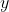 | 取值 | 10 | 65 | 73 | 90 | 100 |
| 概率 | 0.1 | 0.1 | 0.5 | 0.1 | 0.2 |
两班学生的平均分数相同，
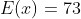
，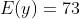
。但明显看出，甲班学生成绩比较整齐，学生的分数都围绕在其平均值附近，散布的程度小。乙班则反之，其分数的两极分化较大。我们需要引进一个指标来刻画这种散布的程度。以甲班为例，平均分为 73，学生的分数与这平均分的偏离记为
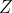
，则 能取 4 个值，分别是68-73=-5, 72-73=-1, 73-73=0, 75-73=2，
其概率分别为 0.1, 0.3, 0.2, 0.4，因此，偏差的平均值是
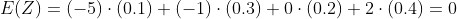
，这表明正负偏离两相抵消了，因此，“偏离平均”不是衡量分数散布程度的一个有用的指标。为克服这个困难，先把各偏离值做平方，以去掉负号再求期望，即
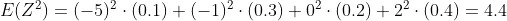
，这个值 4.4 称为甲班学生分数 的方差（Variance），记为
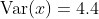
。一般，如果一个随机变量 能取的值为 ，相应的概率为 ，先算出 的期望
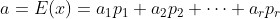
， 各值与期望的偏差为 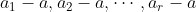
，则其平方的期望，即 的方差，为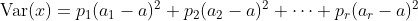
（5）按这个公式，不难算出乙班学生分数 的方差是
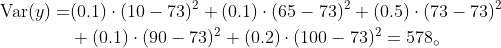
此值远大于甲班学生分数的方差 4.4，反映出乙班学生程度不齐的现象比甲班严重得多。这一点单从分数表上高低分的差距上，多少也可以直接看出来。有时，表面的观察不一定符合实际。设有两个随机变量 和 ，其分布如表 1.6 所示。
表 1.6 随机变量 和
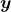
的分布表
| | 取值 | 10 | 20 | 30 |
| 概率 | 0.001 | 0.998 | 0.001 |
| 取值 | 5 | 6 | 7 | |
| 概率 | 1/3 | 1/3 | 1/3 |
从表面上看， 的取值在 10 到 30 之间，散布程度大； 的取值集中在一个小范围的 5 到 7 之间，散布小。但若按公式（5）去计算的方差，不难算出：
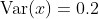
，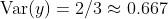
。 的方差比 大，与表面的看法不一致。其原因在于，虽则 取值的范围散布很大，但取两个极端值 10 和 30 的机会都很小，绝大部分概率集中在 20 这个值上，概率分散很小，因而方差也就小。好比一个群体中有 1000 人，其中 998 人的工资为 500 元，有一人的工资为 3000 元，另一人无收入。从差别幅度上来看，差别可达 3000 元，但绝大部分人的工资一样，所以从整个群体看，还是认为“工资差异甚小”。总之，方差不仅取决于变量所取之值，还要看其概率如何。
方差这个指标在应用上很重要。大批生产的工业产品，其质量指标的方差，反映该指标在产品中的稳定程度，在改善产品质量的工作中，是一个主要的注意对象；一种武器（如火炮、飞弹）在一定条件下向一目标射击，其着弹点偏离目标的方差，反映该武器的命中精度，是改进该武器系统时所关心的主要指标；一个国家或地区居民收入的方差，反映居民在经济上两极分化的程度，是研究社会的人以至决策者重视的指标。
方差在应用上有一点不便之处，即变量 的方差
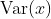
，其单位是 的单位的平方。如 以厘米为单位，则 是以（厘米) 2 为单位。为克服这个不便，取 的平方根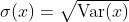
，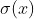
的单位与 的单位一致，它称为随机变量 的“标准差”。设有一个很大的群体，其个体的某项指标 （如人的身高）在全群体中的平均值 未知，通过从该群体中抽得的若干个体的数值  （如抽出的 个人的身高）去估计它，从大数定律可知， 的算术平均
（如抽出的 个人的身高）去估计它，从大数定律可知， 的算术平均
 （6）
（6）
是一个合用的估计。当抽取观察的个体数 增加时，估计的误差会下降，但具体下降的速度如何呢？理论上可以证明，总的讲误差随  成比例下降。例如，，，12 是 4 的 3 倍。因此按上述规律，若甲的观察数为 16 而乙的观察数为 144，则总的讲，甲所做估计的误差将是乙所做估计的误差的 3 倍。注意，我们在行文中加上了“总的讲”的字眼，其意思是，“误差随 成比例下降”是一种概括性的、平均的意义，不是指每个具体场合都必然如此。拿估计一群人的平均身高 来说，某乙只从群体中抽出一个人做观测，有可能碰巧乙抽出的这人身高恰为 ，这时乙的估计是最准的。某甲即使抽取 100 人做估计，结果可能仍不如乙，而 却是 的 10 倍。这是由于误差的随机性所致。
成比例下降。例如，，，12 是 4 的 3 倍。因此按上述规律，若甲的观察数为 16 而乙的观察数为 144，则总的讲，甲所做估计的误差将是乙所做估计的误差的 3 倍。注意，我们在行文中加上了“总的讲”的字眼，其意思是，“误差随 成比例下降”是一种概括性的、平均的意义，不是指每个具体场合都必然如此。拿估计一群人的平均身高 来说，某乙只从群体中抽出一个人做观测，有可能碰巧乙抽出的这人身高恰为 ，这时乙的估计是最准的。某甲即使抽取 100 人做估计，结果可能仍不如乙，而 却是 的 10 倍。这是由于误差的随机性所致。
这个规律的确切解释要用到标准差。如上所述， 的标准差 ，反映 与其均值 偏离的程度，这是一个综合性的指标。如果对 观察 次得 ，而按公式（6）计算其算术平均  ，则可以证明， 的标准差 缩减到了原来的 分之一。
，则可以证明， 的标准差 缩减到了原来的 分之一。
的缩减意味着 的散布度缩减，即有更大的可能性取 附近的值，因而也就有更大的可能招致较小的误差。
在前面介绍正态分布时，我们曾指出它依赖于两个参数 和  。 的意义在前面已有说明，它就是分布的均值。也曾提到， 的值决定了曲线的陡峭程度。 愈小，曲线愈陡峭，而这又意味着分布的集中度高。具体可以证明， 就是分布的标准差。通常，把具有参数 和 的正态分布用 来记，这里的符号
。 的意义在前面已有说明，它就是分布的均值。也曾提到， 的值决定了曲线的陡峭程度。 愈小，曲线愈陡峭，而这又意味着分布的集中度高。具体可以证明， 就是分布的标准差。通常，把具有参数 和 的正态分布用 来记，这里的符号  是英文 Normal（正常）的首字母，另外要注意括号里的顺序，总是期望 在前，方差
是英文 Normal（正常）的首字母，另外要注意括号里的顺序，总是期望 在前，方差  在后。因此，一个具有期望 5 和标准差 2 的正态分布，要记为 ，或 。
在后。因此，一个具有期望 5 和标准差 2 的正态分布，要记为 ，或 。
在正态分布的情况，用 个观察值的算术平均 去估计期望 ，其所产生的误差与标准差 和 的关系，有一个简单的描述，那就是“ 与 的差距不超过 ”的概率，即
（7）
与 和 都无关，这里 是任意一个大于 0 的数。就是说，我们可以用 这么大的概率保证，虽然 不大可能恰好等于要估计的 ，但它与 的差距很可能不会超过 。我们不能百分之百地保证这一点，因为偶然性的缘故， 与 产生很大差异的情况，总无法完全避免。
公式（7）中的 的值依赖于 ，可以从专门制备的“正态分布表”上查到。例如有
， ， ，
等等。公式（7）在实用上有多方面的用途，举一个例子，在应用上有时我们会面临如何决定 的问题。 定得太小，则用 去估计 可能产生过大的误差。反之，若 定得太大，则会造成不必要的浪费。如何确定 ，要根据对估计的质量的要求。比如说，要求以 0.95 的概率保证 与 的差距不超过 0.5，因为 ，按公式（7），这等于要求
或 。如果此数不是整数，则以其最邻近而大于它的整数取代之。例如算出的结果为 17.3565，则用 18 取代。这个解法要求已知 的值，在应用中这不一定能做到。在 不知道时，问题就大为复杂化。
观察次数 与用 去估计 的误差之间的关系——平方根反比律，在历史上首先是由法国概率论学者棣莫弗在 1733 年发现的。不过他处理的只是一个特殊情况，用频率去估计概率的误差问题。这个“平方根反比律”被认为是人类认识上的一个重要进步，要知道在很长时期内，学者们对这个关系该如何意见很不一致，有相当一部分人认为应与 成反比。
这个规律反映了一种“报酬递减”的性质。随着观察次数的加大，每再增加一次观察的收益（体现在用 估计 的误差的下降上）减少，观察 400 次而做出的估计所产生的误差，较之观察 100 次而做出的估计所产生的误差，只缩小了一半。换句话说，后 300 次观察（在前 100 次观察的基础上）的效益，与前 100 次观察相同。这告诉我们，一味追求加大观察次数是无益的。如上例所示，概率论的方法告诉我们去决定一个合理的观察次数。